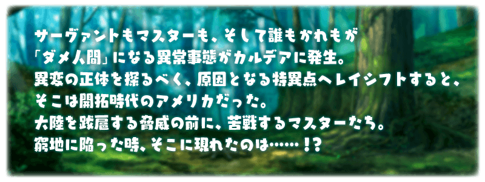
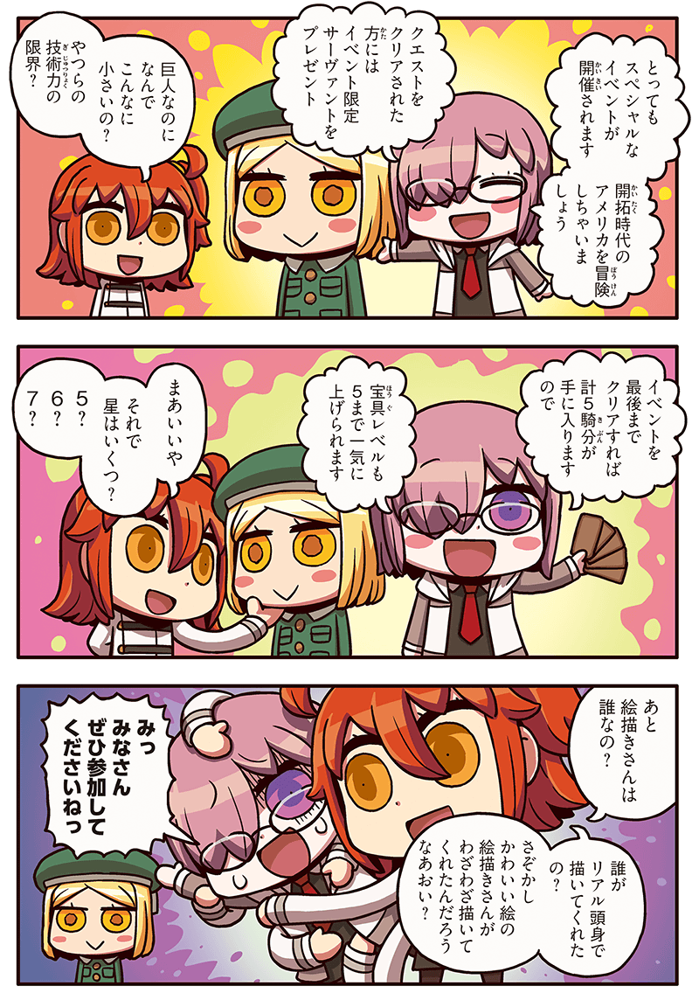
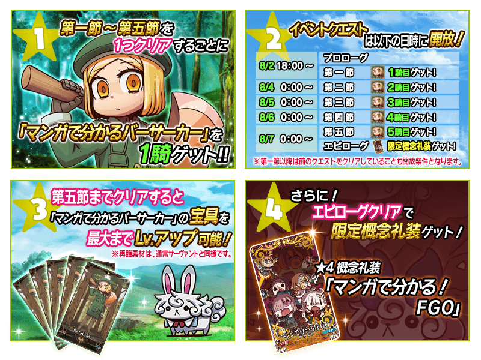

舉辦期間限定活動「All the Statesman! ～靠漫畫了解合衆國開拓史～」！
通過逐日開放的期間限定活動關卡，得到期間限定Servant「★1(C)靠漫畫了解Berserker」吧！
並且！通過全部活動關卡的話，可以取得限定概念禮裝「★4(SR)マンガで分かる！FGO」！
◆舉辦期間◆
2017年8月2日(三) 17:00～8月16日(三) 11:59
◆活動参加條件◆
只限通過「特異點F 炎上汙染都市 冬木」的Master才能参加
※就算是未通過活動参加條件「特異點F 炎上汙染都市 冬木」的狀態狀態，在管理室(ターミナル)畫面也會出現活動看板，但未滿足参加條件的情況是無法參加活動關卡。
本活動第二節以後的活動關卡將逐日開放。
活動關卡的進行條件為通過前1個的活動關卡。
※要開始第一節的條件為通過序幕。

◆活動關卡開放時間表◆
| 開放時間 | 關卡 |
|---|---|
| 8/2(三) 17:00～ | ・開放序幕 ・開放第一節 |
| 8/3(四) 23:00～ | ・開放第二節 |
| 8/4(五) 23:00～ | ・開放第三節 |
| 8/5(六) 23:00～ | ・開放第四節 |
| 8/6(日) 23:00～ | ・開放第五節 ・開放後記 |
※活動關卡含序幕與後記全7個。
請注意後記結束後，活動看板還是會留在管理室(ターミナル)畫面，但不會追加之後的關卡。
※請注意8月3日不會開放活動關卡。
◆「All the Statesman! ～靠漫畫了解合衆國開拓史～」限定概念禮裝◆
|
★★★★SR |
為了紀念期間限定活動「All the Statesman! ～靠漫畫了解合衆国開拓史～」的舉辦，MyRoom以期間限定變更為特別設定！
◆舉辦期間◆
2017年8月2日(三) 18:00～8月9日(三) 12:59まで
從緊接「Fate/Grand Order」的服務開始到現在，每週帶來的官方內容，『靠漫畫了解！Fate/Grand Order』的單行本在8月2日(三)發售！
嶄露頭角的漫画家・リヨ所繪製，歷經約2年間的連載原稿，再加上特別繪製的傑出一冊！
發售日：大好評發售中！
發售源：KADOKAWA
規格：A5紙
定價：926円(未稅)